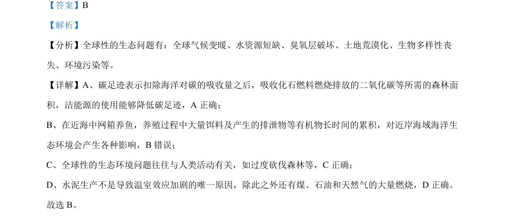

考点：碳足迹 海洋生态系统 温室效应
该题考查人类活动对生态环境的影响及温室效应相关生态问题。

📄 原 PDF 第 3 页：
素材/真题/吉林/2008-2024·（吉林）生物高考真题/2024年高考生物试卷（辽宁）（解析卷）.pdf
【答案】B 【解析】 【分析】全球性的生态问题有：全球气候变暖、水资源短缺、臭氧层破坏、土地荒漠化、生物多样性丧 失、环境污染等。 【详解】A、碳足迹表示扣除海洋对碳的吸收量之后，吸收化石燃料燃烧排放的二氧化碳等所需的森林面 积，洁能源的使用能够降低碳足迹，A 正确； B、在近海中网箱养鱼，养殖过程中大量饵料及产生的排泄物等有机物长时间的累积，对近岸海域海洋生 态环境会产生各种影响，B错误； C、全球性的生态环境问题往往与人类活动有关，如过度砍伐森林等，C正确； D、水泥生产不是导致温室效应加剧的唯一原因，除此之外还有煤、石油和天然气的大量燃烧，D 正确。 故选 B。